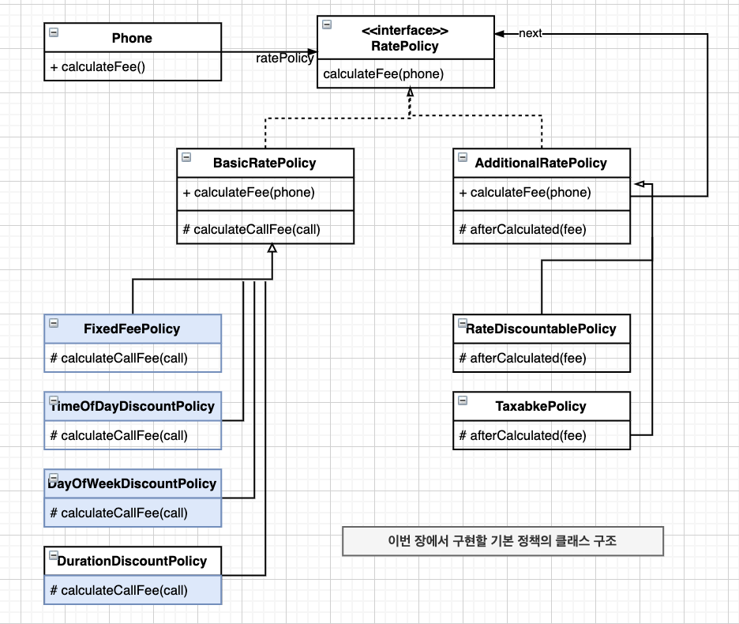
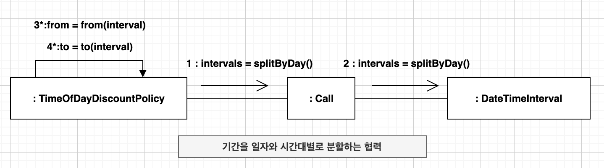
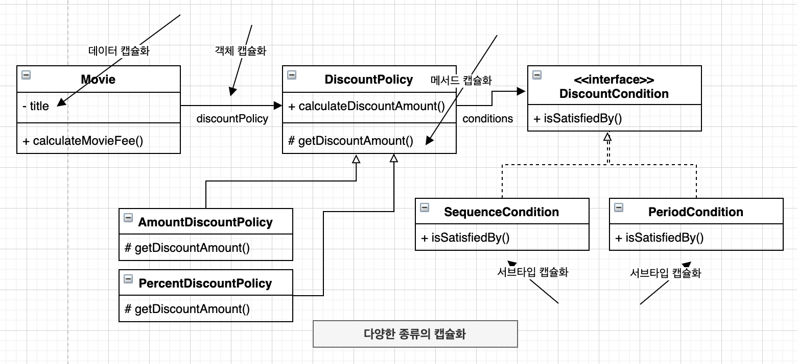
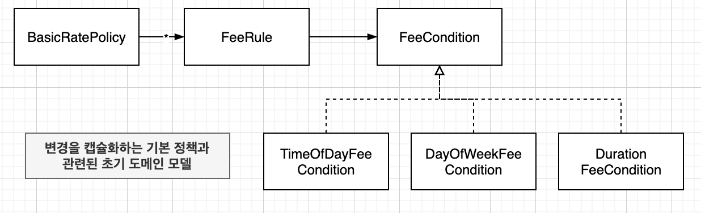
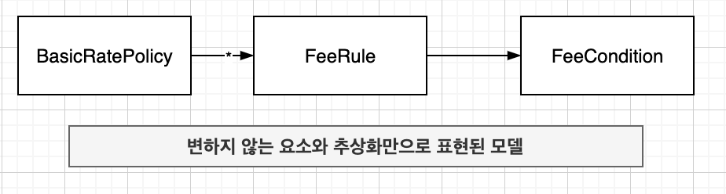
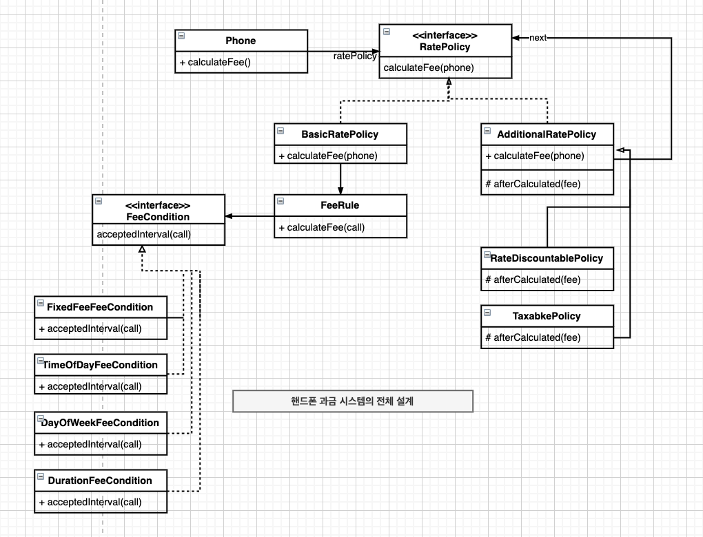

“OBJECTS 14장”
가능하면 유사한 기능을 구현하기 위해 유사한 협력 패턴을 사용
일관성 있는 협력 패턴을 적용하면 코드가 이해하기 쉽고 직관적이며 유연해짐
핸드폰 과금 시스템 변경하기 
고정요금 방식 구현하기 1 2 3 4 5 6 7 8 9 10 11 12 13 14 public class FixedFeePolicy extends BasicRatePolicy { private Money amount; private Duration seconds; public FixedFeePolicy (Money amount, Duration seconds) { this .amount = amount; this .seconds = seconds; } @Override protected Money calculateCallFee (Call call) { return amount.times(call.getDuration().getSeconds() / seconds.getSeconds()); } }
시간대별 방식 구현하기 
1 2 3 4 5 6 7 8 9 10 11 12 13 14 15 16 17 18 19 public class TimeOfDayDiscountPolicy extends BasicRatePolicy { private List<LocalTime> starts = new ArrayList <LocalTime>(); private List<LocalTime> ends = new ArrayList <LocalTime>(); private List<Duration> durations = new ArrayList <Duration>(); private List<Money> amounts = new ArrayList <Money>(); @Override protected Money calculateCallFee (Call call) { Money result = Money.ZERO; for (DateTimeInterval interval : call.splitByDay()) { for (int loop = 0 ; loop < starts.size(); loop++) { result.plus(amounts.get(loop).times(Duration.between(from(interval, starts.get(loop)), to(interval, ends.get(loop))).getSeconds() / durations.get(loop).getSeconds())); } } return result; } ... }
요일별 방식 구현하기 1 2 3 4 5 6 7 8 9 10 11 12 13 14 15 16 17 public class DayOfWeekDiscountPolicy extends BasicRatePolicy { private List<DayOfWeekDiscountRule> rules = new ArrayList <>(); public DayOfWeekDiscountPolicy (List<DayOfWeekDiscountRule> rules) { this .rules = rules; } @Override protected Money calculateCallFee (Call call) { Money result = Money.ZERO; for (DateTimeInterval interval : call.getInterval().splitByDay()) { for (DayOfWeekDiscountRule rule: rules) { result.plus(rule.calculate(interval)); } } return result; } }
1 2 3 4 5 6 7 8 9 10 11 12 13 14 15 16 17 18 19 20 public class DayOfWeekDiscountRule { private List<DayOfWeek> dayOfWeeks = new ArrayList <>(); private Duration duration = Duration.ZERO; private Money amount = Money.ZERO; public DayOfWeekDiscountRule (List<DayOfWeek> dayOfWeeks, Duration duration, Money amount) { this .dayOfWeeks = dayOfWeeks; this .duration = duration; this .amount = amount; } public Money calculate (DateTimeInterval interval) { if (dayOfWeeks.contains(interval.getFrom().getDayOfWeek())) { return amount.times(interval.duration().getSeconds() / duration.getSeconds()); } return Money.ZERO; } }
구간별 방식 구현하기
유사한 기능을 서로 다른 방식으로 구현해서는 안됨
객체지향에서 기능을 구현하는 유일한 방법은 객체 사이의 협력을 만드는 것 뿐
유지보수 가능한 시스템을 구축하는 첫걸음은 협력을 일관성 있게 만드는 것
1 2 3 4 5 6 7 8 9 10 11 12 13 14 15 16 17 18 19 20 21 22 23 24 25 26 27 28 public class DurationDiscountRule extends FixedFeePolicy { private Duration from; private Duration to; public DurationDiscountRule (Duration from, Duration to, Money amount, Duration seconds) { super (amount, seconds); this .from = from; this .to = to; } public Money calculate (Call call) { if (call.getDuration().compareTo(to) > 0 ) { return Money.ZERO; } if (call.getDuration().compareTo(from) < 0 ) { return Money.ZERO; } Phone phone = new Phone (null ); phone.call(new Call (call.getFrom().plus(from), call.getDuration().compareTo(to) > 0 ? call.getFrom().plus(to) : call.getTo())); return super .calculateFee(phone); } }
1 2 3 4 5 6 7 8 9 10 11 12 13 14 public abstract class BasicRatePolicy implements RatePolicy { @Override public Money calculateFee (Phone phone) { Money result = Money.ZERO; for (Call call : phone.getCalls()) { result.plus(calculateCallFee(call)); } return result; } protected abstract Money calculateCallFee (Call call) ; }
설계에 일관성 부여하기
다양한 설계 경험을 익혀라
널리 알려진 디자인 패턴을 학습
변경이라는 문맥안에서 디자인 패턴을 적용
디자인 패턴은 특정한 변경에 대해 일관성 있는 설계를 만들 수 있는 경험의 법칙을 모아놓은 일종의 설계 템플릿
조건 로직 대 객체 탐색
커다란 클래스를 더 작은 클래스들로 분리
클래스 분리 기준
일관성 있는 협력을 위한 지침
변하는 개념을 변하지 않는 개념으로부터 분리하라.
변하는 개념을 캡슐화 하라.
추상화를 찾아 추상화에 의존하도록 만들것
캡슐화 다시 살펴보기
데이터 은닉
캡슐화
단순히 데이터를 감추는 것이 아닌 소프트웨어 안에서 변할 수 있는 모든 개념을 감추는 것
객체의 퍼블릭 인터페이스와 구현을 분리

코드 수정으로 인한 파급효과를 제어할 수 있는 모든 기법이 캡슐화의 일종
변하는 부분을 분리해서 타입 계층 만들기
변하지 않는 부분의 이부로 타입 계층을 합성하기
일관성 있는 기본 정책 구현하기
변경 캡슐화하기
규칙 : 변하지 않는 것
적용조건 : 변하는 것
서브타입의 추상화
규칙으로부터 적용조건을 분리해서 추상화 한 후 추상화의 서브타입으로 만듬
객체 캡슐화
규칙이 적용조건을 표현하는 추상화를 합성 관계로 연결

협력 패턴 설계하기 
추상화 수준에서 협력 패턴 구현하기 1 2 3 4 5 6 7 8 9 10 11 12 13 14 15 16 17 18 19 20 21 22 public final class BasicRatePolicy implements RatePolicy { private List<FeeRule> feeRules = new ArrayList <>(); public BasicRatePolicy (FeeRule ... feeRules) { this .feeRules = Arrays.asList(feeRules); } @Override public Money calculateFee (Phone phone) { return phone.getCalls() .stream() .map(call -> calculate(call)) .reduce(Money.ZERO, (first, second) -> first.plus(second)); } private Money calculate (Call call) { return feeRules .stream() .map(rule -> rule.calculateFee(call)) .reduce(Money.ZERO, (first, second) -> first.plus(second)); } }
1 2 3 4 5 6 7 8 9 10 11 12 13 14 15 16 public class FeeRule { private FeeCondition feeCondition; private FeePerDuration feePerDuration; public FeeRule (FeeCondition feeCondition, FeePerDuration feePerDuration) { this .feeCondition = feeCondition; this .feePerDuration = feePerDuration; } public Money calculateFee (Call call) { return feeCondition.findTimeIntervals(call) .stream() .map(each -> feePerDuration.calculate(each)) .reduce(Money.ZERO, (first, second) -> first.plus(second)); } }
구체적인 협력 구현하기 시간대별 정책 1 2 3 4 5 6 7 8 9 10 11 12 13 14 15 16 17 18 19 20 21 22 23 24 25 26 27 28 29 30 public class TimeOfDayFeeCondition implements FeeCondition { private LocalTime from; private LocalTime to; public TimeOfDayFeeCondition (LocalTime from, LocalTime to) { this .from = from; this .to = to; } @Override public List<DateTimeInterval> findTimeIntervals (Call call) { return call.getInterval().splitByDay() .stream() .map(each -> DateTimeInterval.of( LocalDateTime.of(each.getFrom().toLocalDate(), from(each)), LocalDateTime.of(each.getTo().toLocalDate(), to(each)))) .collect(Collectors.toList()); } private LocalTime from (DateTimeInterval interval) { return interval.getFrom().toLocalTime().isBefore(from) ? from : interval.getFrom().toLocalTime(); } private LocalTime to (DateTimeInterval interval) { return interval.getTo().toLocalTime().isAfter(to) ? to : interval.getTo().toLocalTime(); } }
요일별 정책 1 2 3 4 5 6 7 8 9 10 11 12 13 14 15 16 public class DayOfWeekFeeCondition implements FeeCondition { private List<DayOfWeek> dayOfWeeks = new ArrayList <>(); public DayOfWeekFeeCondition (DayOfWeek ... dayOfWeeks) { this .dayOfWeeks = Arrays.asList(dayOfWeeks); } @Override public List<DateTimeInterval> findTimeIntervals (Call call) { return call.getInterval() .splitByDay() .stream() .filter(each -> dayOfWeeks.contains(each.getFrom().getDayOfWeek())) .collect(Collectors.toList());
구간별 정책 1 2 3 4 5 6 7 8 9 10 11 12 13 14 15 16 17 18 19 20 21 22 public class DurationFeeCondition implements FeeCondition { private Duration from; private Duration to; public DurationFeeCondition (Duration from, Duration to) { this .from = from; this .to = to; } @Override public List<DateTimeInterval> findTimeIntervals (Call call) { if (call.getInterval().duration().compareTo(from) < 0 ) { return Collections.emptyList(); } return Arrays.asList(DateTimeInterval.of( call.getInterval().getFrom().plus(from), call.getInterval().duration().compareTo(to) > 0 ? call.getInterval().getFrom().plus(to) : call.getInterval().getTo())); } }
개념적 무결성
객체지향 시스템에서 유사한 기능에 대해 유사한 협력 패턴을 적용하는 것
일관성과 동일
협력을 설계하고 있다면 항상 기존의 협력 패턴을 따를 수 없는지 고민하라. 그것이 시스템의 개념적 무결성을 지키는 최선의 방법일 것이다.
협력 패턴에 맞추기 
현재의 설계에 맹목적으로 일관성을 맞추는 것이 아니라 달라지는 변경의 방향에 맞춰 지속적으로 코드를 개선해야 함
패턴을 찾아라